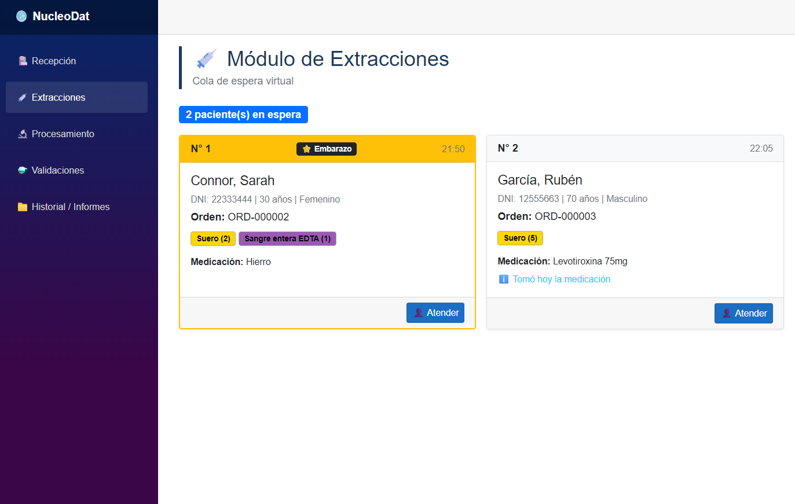
Sistema de gestión para laboratorios
Versión DEMO de una aplicación web .NET que permite gestionar la información de un laboratorio en sus diferentes etapas, desde la recepción de pacientes hasta la entrega de resultados.
Programadora
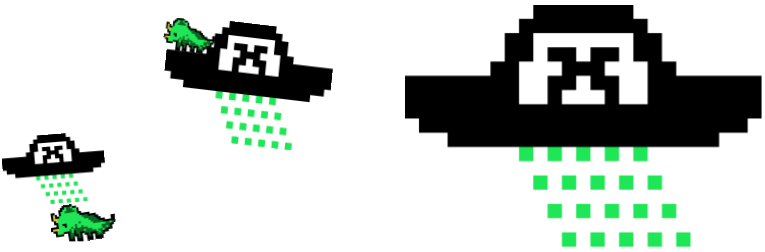
¡Hola! Soy Daniela y soy desarrolladora de software.
En 2023 me gradué como Técnica Universitaria en Programación en la Universidad Tecnológica Nacional (UTN) y en la actualidad me desempeño principalmente como desarrolladora Back-End.
Me gusta trabajar en equipo y aprender cosas nuevas, apuntando siempre a mejorar mis prácticas y a ampliar mis conocimientos de manera proactiva.
Antes de comenzar mi carrera en tecnología, me formé y ejercí como Técnica de Laboratorio, especializándome en el área de bacteriología clínica.

Versión DEMO de una aplicación web .NET que permite gestionar la información de un laboratorio en sus diferentes etapas, desde la recepción de pacientes hasta la entrega de resultados.
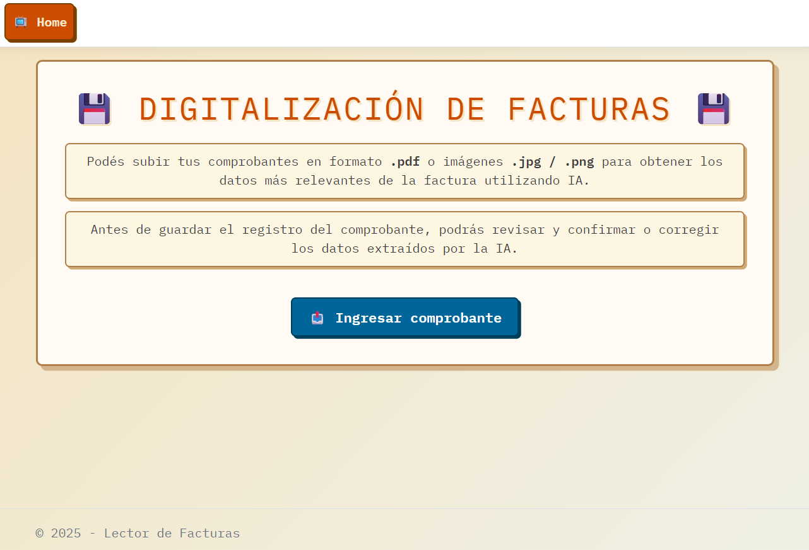
Proyecto .NET MVC que permite ingresar una factura en formato imagen o PDF y utiliza IA para extraer los datos más relevantes.
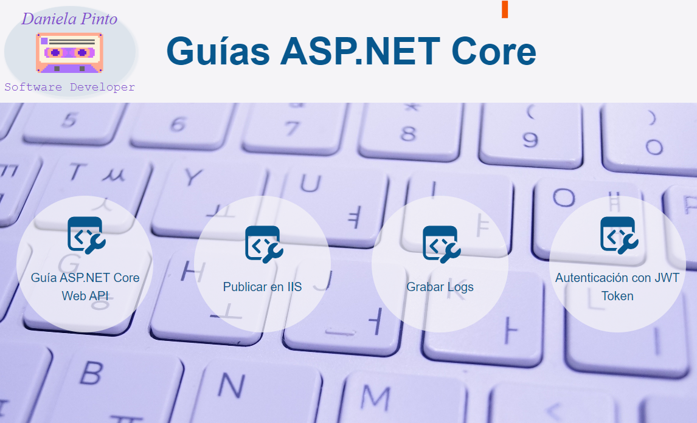
Proyecto front-end que es una página de documentación con guías para el desarrollo de APIs usando ASP.NET Core 6 y versiones posteriores.
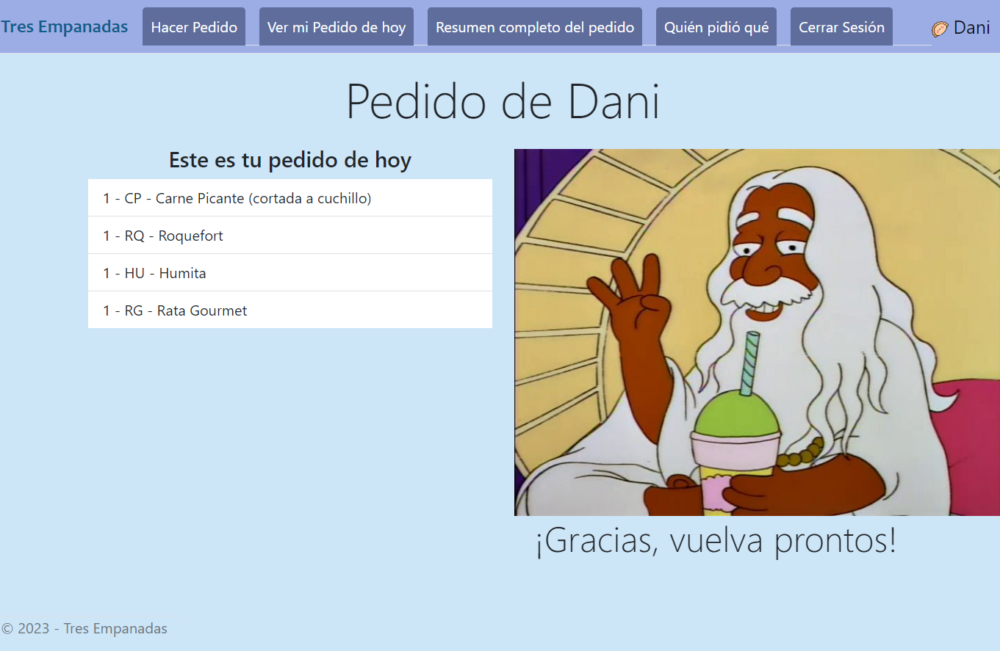
Aplicación MVC desarrollada en C# con ASP.NET Core, diseñada para organizar pedidos grupales de empanadas.
Cada usuario puede hacer su pedido individual y la app consolida todos los pedidos en una única lista para la compra grupal.
La app utiliza autenticación JWT.
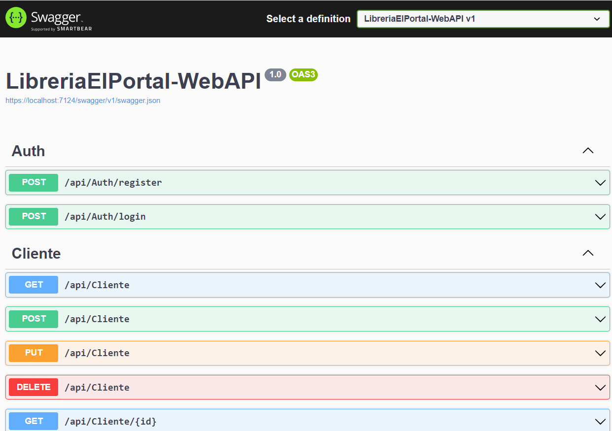
REST API desarrollada en C# con ASP.NET Core 6.
Proyecto con enfoque DB First, orientado a gestionar el acceso a la base de datos desde una aplicación MVC.
La API utiliza Swagger como herramienta de documentación interactiva.
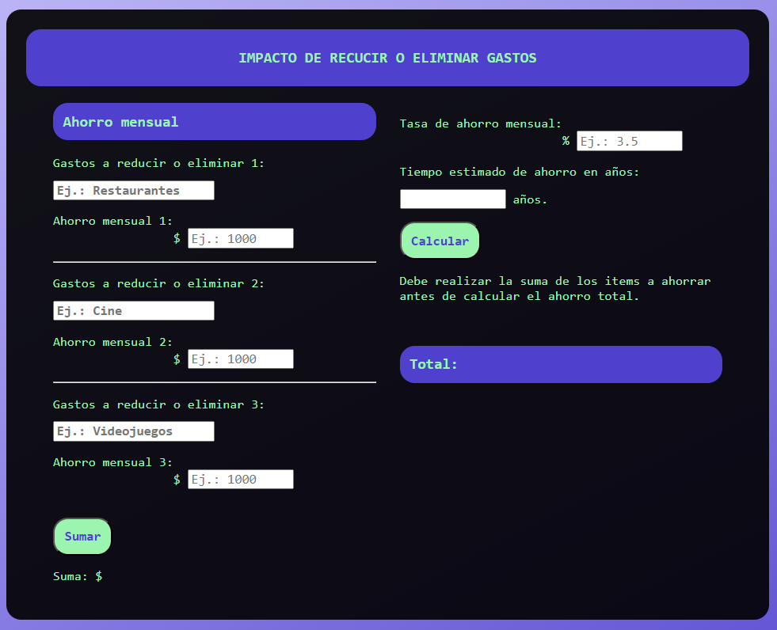
Este fue el primer proyecto en el que trabajé cuando di mis primeros pasos en el mundo de la programación 🌱
Lo comparto como un recordatorio de ese primer pequeño paso en este increíble camino.
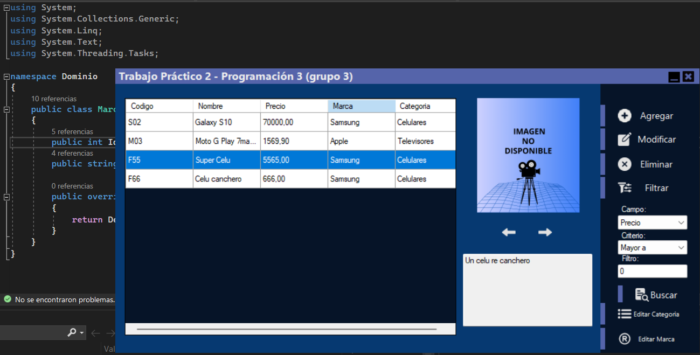
Proyecto colaborativo de la materia Programación 3 de la Tecnicatura Universitaria en Programación (UTN).
Aplicación de escritorio para ABM (CRUD) de elementos, desarrollada en C# con .NET Framework.
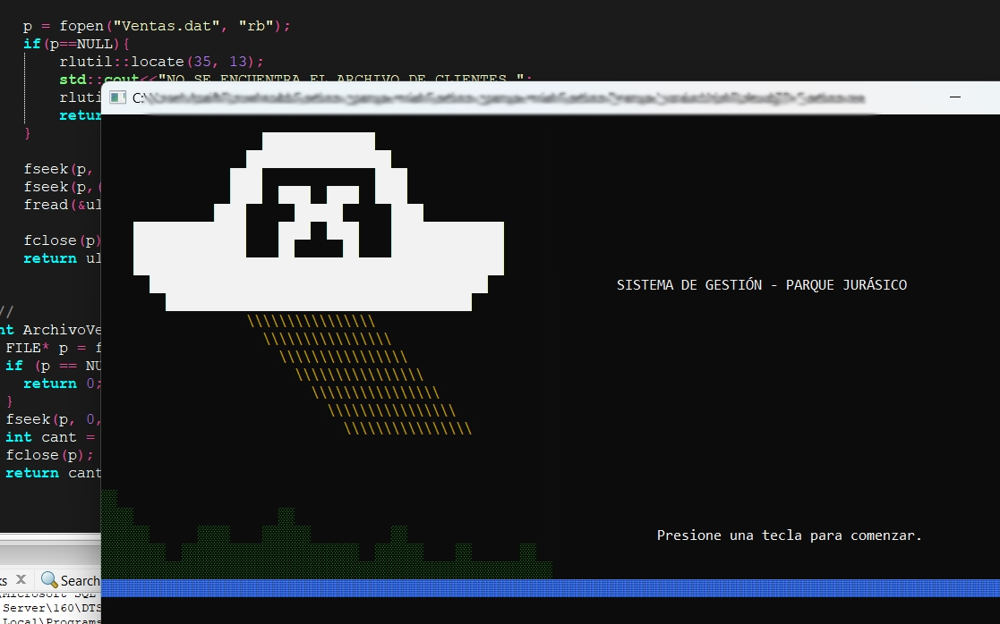
Aplicación de consola desarrollada en C++ durante la materia Laboratorio de Computación 2 de la Tecnicatura Universitaria en Programación (UTN).
El programa está diseñado para gestionar un parque de aventura ficticio.
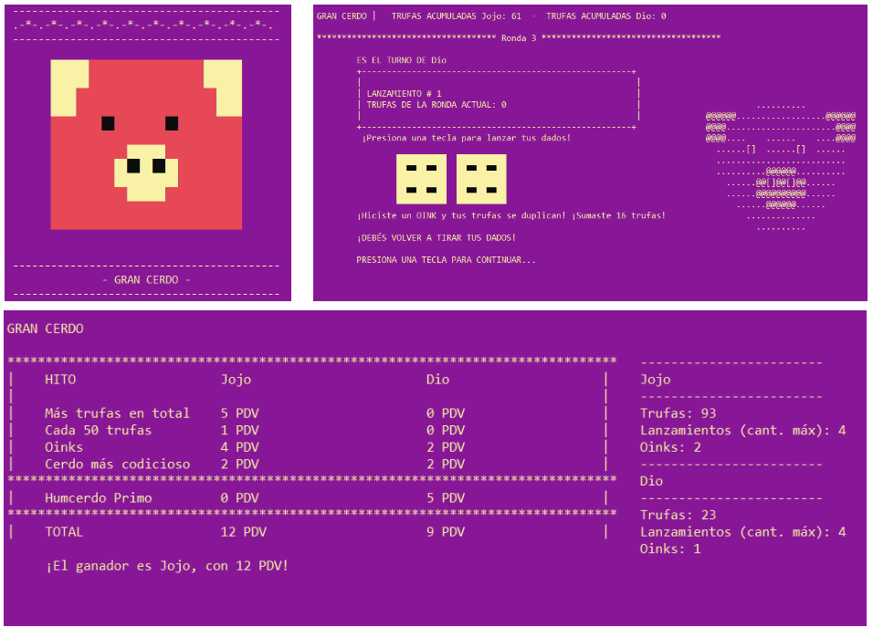
Esta aplicación de consola es un videojuego desarrollado en C++ durante la materia Laboratorio de Computación 1 de la Tecnicatura Universitaria en Programación (UTN).
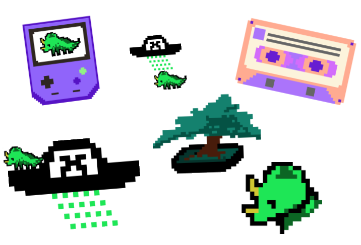
Imágenes creadas con técnicas de pixel art.
Algunas fueron diseñadas para ser usadas en otros proyectos de este portfolio.
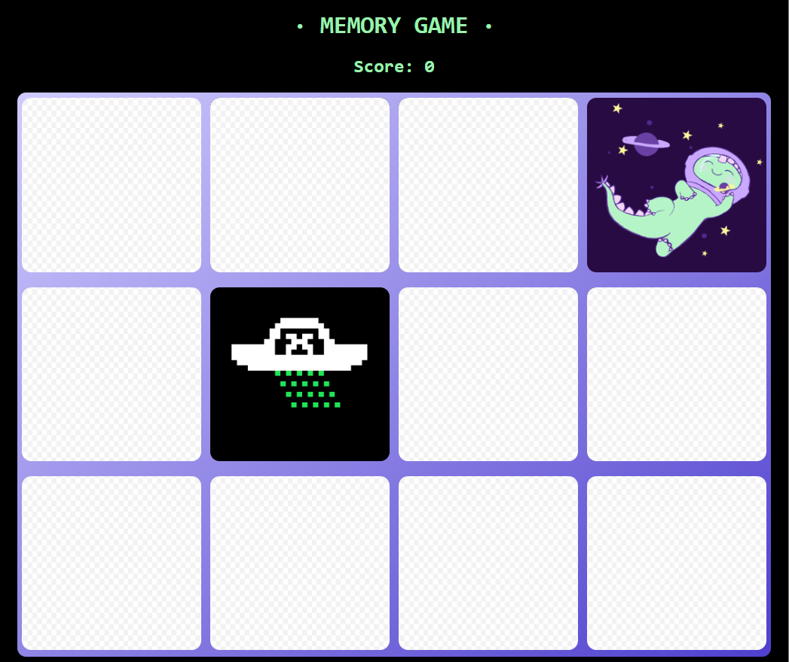
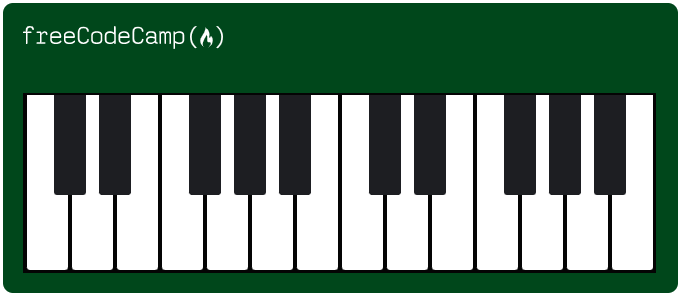
Proyecto del curso "Responsive Web Design" de FreeCodeCamp, usando HTML y CSS.
Se adapta dinámicamente al tamaño de la pantalla.
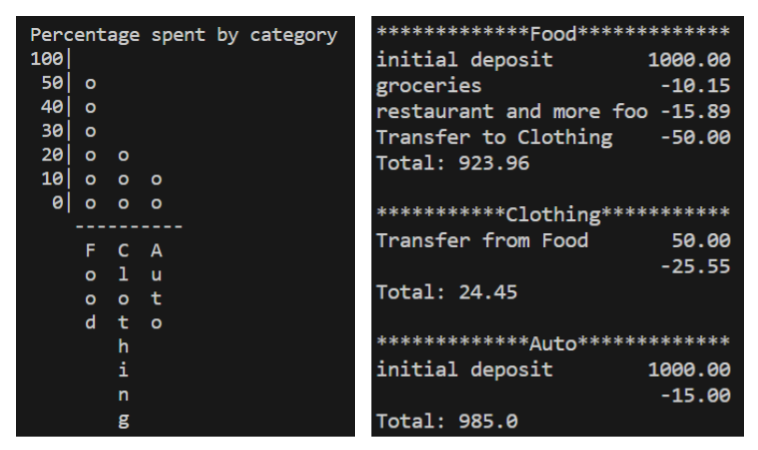
Aplicación desarrollada en Python que permite visualizar el análisis de presupuesto en formato de tabla y gráfico de barras.
Este proyecto fue realizado como parte del curso "Scientific Computing with Python" de FreeCodeCamp.